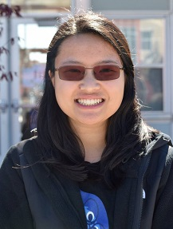

Michelle Chan - Lead Curator/Co-Organizer
Michelle Chan is a Junior at Mills High School and loves writing, playing music, and watching murder mysteries in her spare time. She hopes to visit New York and see a Broadway musical someday.
Tiffany Yu - Co-Organizer/Executive Producer
Passionate in public speaking, business, public policy, and history, Tiffany takes pride in founding DECA, cofounding TED-Ed, and actively participating in Model United Nations, GATE, and Drill Team. Outside of school, she enjoys working with the Decision Education Foundation and volunteering at the Millbrae library.
Noah Weinstein is a junior at Mills High School and is excited to take part, help organize, and host Mills TedX. He is an active Mills student and hopes to bring new and engaging topics of discussion to his high school.
Klytie Xu – Sponsorship Manager
An avid reader, Klytie can be found with her nose in a book, catching up on obscure British mystery shows, or attempting to memorize all the lyrics to the musical, Hamilton. She is an active participant in several clubs at Mills and is excited to be a part of the TEDxMillsHighSchool team.
Sonia Fonseca – Budgets Manager
Sonia is a junior and volunteers as part of clubs in Mills, such as Interact as well as outside of school such as the Leo’s club. In her spare time, she swims for Mills’ water polo and swim team. In her future, she hopes to have a career that involves math, science, or both. Lastly, Sonia is glad to be a part of Mills’ TEDx team as the budget manager.
Adrianne Offril – Marketing/Social Media Director
Adrianne Offril is a junior and a member of the Ted-Ed Club at Mills. She enjoys swimming and practicing karate, as well as divulging into the Harry Potter series. Adrianne volunteers at the SF Food Bank and loves working with kids at summer camps. She hopes you have a great experience at the first TedxMillsHighSchool event!
Ema Henry – Website/Blogger Manager
Ema is a Junior at Mills High School. She is an active member of To Write Love On Her Arms and hopes for more awareness towards the issues of mental health. In the future, she hopes to go to medical school and get a degree in psychiatry. Ema hopes the TEDxMillsHighSchool goes well and can’t wait for a new experience!

Sammi Chow - Lead Designer
Sammi is a junior at Mills High School who enjoys watching crime shows and browsing through Pintrest. In her free time, she enjoys drawing. For the past three summers, Sammi has been a counselor for 6-7th graders at a summer day camp.
Kaitlyn is a sophomore at Mills and a self-taught computer programmer. She enjoys coding websites (including this one), playing the bass clarinet, and stalking the neighborhood cats. Taking part in Millbrae’s first TEDx Conference is new but fun experience for her, and hopefully many people will be inspired!

Sarah Gayer - Audience Experience Team
Sarah Gayer is a junior at Mills High School. She is a competitive cross country and track athlete and also happens to be an avid lover of musical theater. Sarah is very excited to be a part of the TEDx audience experience team and hopes you have fun at our next event!
Max Russell - Production Manager
Max Russell is looking forward to helping out in the upcoming TEDx event and is excited to see how it will turn out. He enjoys camping and practicing martial arts in his free time. Max is currently involved with Boy Scouts and spends time tutoring after school.
Erin McKean - Speaker Coach
Erin McKean is the founder of the newly-not-for-profit Wordnik.com, the world’s biggest online dictionary. She’s the author of the Weird and Wonderful Words books, the best-selling novel The Secret Lives of Dresses, and (most recently) The Hundred Dresses, a field guide to dresses. She blogs at dressaday.com. When you meet her, please tell her your favorite word.